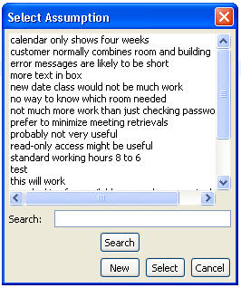
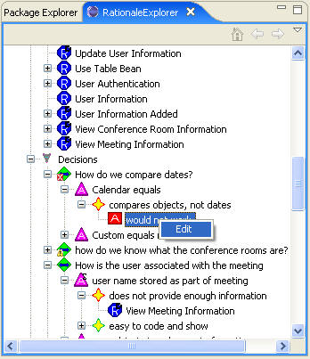
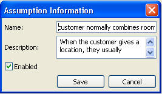

When we create or edit an argument, we could select the assumption for or against the argument as well as creating a new assumption by click "new" in the select assumption window. Or we could edit an existing assumption by right-click the name of an existing assumption and choose edit or by double-clicking the name of the assumption. See the following figures:


The following figure shows the Assumption Editor. This only requires a Name although it is more descriptive if a Description is specified as well.
